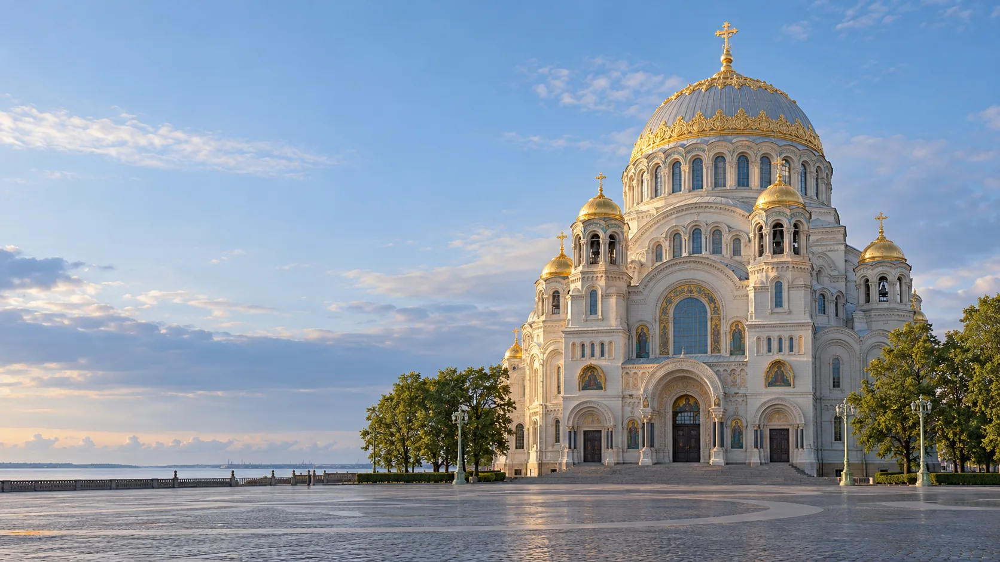

Дом молодёжи
Кронштадтский Дворец молодёжи
г. Кронштадт, Советская ул., д. 35, лит. А
Смотреть площадку
Молодёжные площадки района
Дворец молодёжи и клубы «Маяк» и «Ровесник» в Кронштадте.
Смотреть площадкиКаталог района
Ищи по названию, адресу или направлению.
Показано 3 площадки
Загружаем карту клубов…
Предварительные координаты: © OpenStreetMap contributors.
г. Кронштадт, Советская ул., д. 35, лит. А
Смотреть площадкуг. Кронштадт, ул. Мануильского, д. 45/3, лит. А
Смотреть клубг. Кронштадт, Якорная пл., д. 3В, лит. А
Смотреть клубПодходящих площадок не найдено. Попробуй другой запрос.
Связаться с учреждением
Контакты учреждения
г. Кронштадт, Советская ул., д. 35, лит. А
Перед посещением
Спроси, для кого открыта группа.
Проверь дни, время и наличие мест.
Узнай, как присоединиться.
Карточки клубов, студий и секций сверены 23.10.2026 по официальному сайту Дворца молодёжи. Бесплатные профили сопоставлены с городским перечнем; отдельные платные услуги проверены по прейскурантам 2026 года и не включены в каталог. Возраст и режим работы каждого направления указаны на его странице. Спортивный комплекс относится к площадке Дворца на Советской улице.